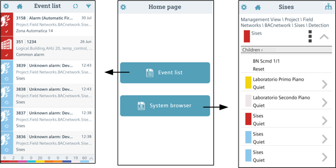
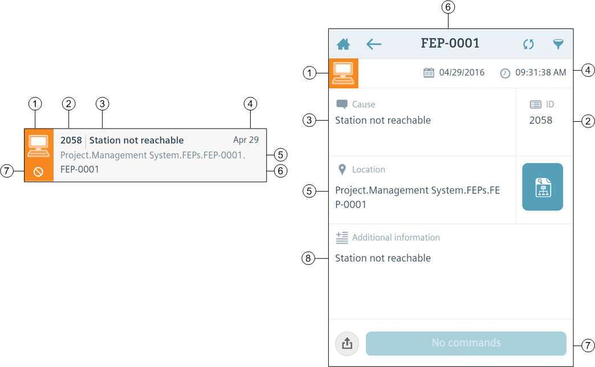
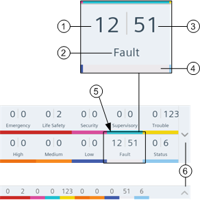
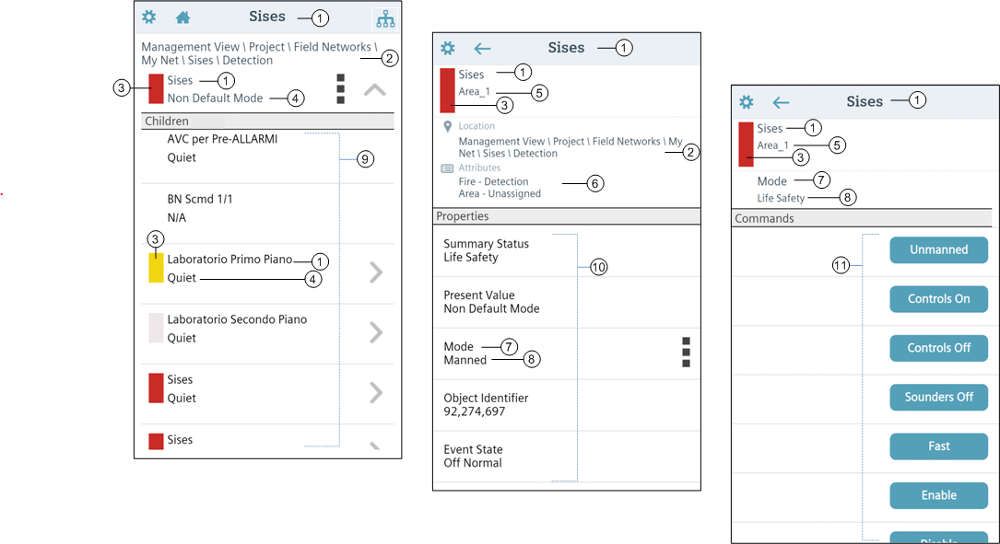

Mobile App
This section provides background information for using the Desigo CC mobile app. For related procedures, see the step-by-step section.
App Home Page
After you start mobile app and sign in, the app Home page screen displays.

From here you can select which function (Event list or System browser) to use by tapping one of the buttons. You can return to this home page from elsewhere in the app by tapping the Home icon in the action bar at the top of the screen.
- The Event List function lets you view the events (alarms) of the connected management platform and send alarm-handling commands (such as Acknowledge, Reset, and so on). You can also inspect the properties of the event source, and share the details of an event by email or SMS device.
- The System Browser function of the app enables you to browse the hierarchy (object tree) of the management platform, view the properties of objects, and send commands to change the value of properties.
Event List
For related procedures see Using the Mobile App Event List.

Control of fire alarms from the mobile app is not allowed in UL/ULC-compliant systems. See 25_UL/ULC Compliance: Mobile & Windows App.
The Desigo CC app displays the following information about each event in the list. The event categories, colors, discipline icons, and so forth are the same as those of the connected management platform.
NOTE: In the current version, the category list on the app does not change to match the categories configured on the management platform).

| Description |
1 | Discipline icon. Background color indicates the event category. |
2 | Event ID |
3 | Event cause |
4 | Event time and date. On smartphones, the event line shows only the time for events that occurred today, and only the date for older events. The event detail view always shows both time and date. |
5 | Event location in the hierarchy of the System Browser. |
6 | Event source: the field device or subsystem that issued the alarm. |
7 | Available command, if any. This can be: Acknowledge, Reset, Silence , Unsilence, or No Command. The event line shows only the icon (and shows no icon if there is no command). If there are two commands available, (for example Silence and Acknowledge): the details screen displays two command buttons, while the event line displays only the icon of the higher-priority command (Acknowledge and Reset take precedence over Silence/Unsilence). |
8 | Additional information text. |
Summary Bar
The Summary bar provides a compact report of the events in the list and allows quick category-based filtering. See Filter Events for how to do this.

| Description |
1 | Number of unacknowledged events in the category. The lamp blinks if there is at least one unacknowledged event. |
2 | Category name |
3 | Total number of events in the category |
4 | Category color. Gray if the category is filtered out |
5 | Filter button. Tap to toggle the category filter on/off |
6 | Arrows to expand/collapse the summary bar |
On smartphones, and on tablets in portrait mode, the Summary bar displays along the bottom. On tablets in landscape mode, the Summary bar displays along the side.
System Browser
For related procedures see Using the Mobile App System Browser.

| Description |
1 | Description (and/or Name) of the object. You can configure whether only the Description, only the Name, or both display (and in what order) from Object Options in the Settings |
2 | Path (location in the system tree) of the currently selected object. |
3 | Summary Status (category color of the most severe event in this branch of the tree). If there are alarms pertaining to this object (or its children), this rectangle becomes colored with the category color of the most severe alarm. |
4 | Value of the object's default property. |
5 | Alias of the currently selected object. |
6 | Attributes of the object: Discipline - Subdiscipline; Type - Subtype |
7 | Name of the property |
8 | Value of the property |
9 | List of the children of the currently selected object. The list shows the name and/or description (as configured in Object Options) of each object, along with the value of its default property. A icon marks objects those objects that have children in their turn. |
10 | List of the properties of the currently selected object. The list shows the name and value of each property. A icon marks those properties that have commands available. |
11 | List of available commands for changing/writing the currently selected property. |
 menu.
menu.Return to your Previous Location in System Browser
When you leave System Browser, for example by tapping , the current location in the System Browser is saved. When you next open System Browser it will automatically return to the previous location.